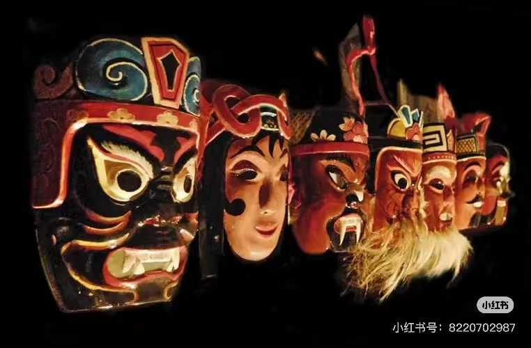
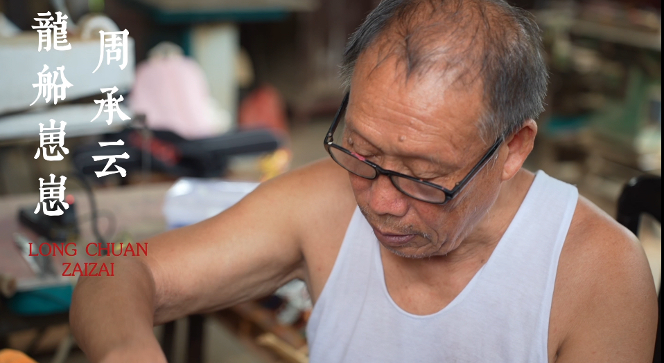
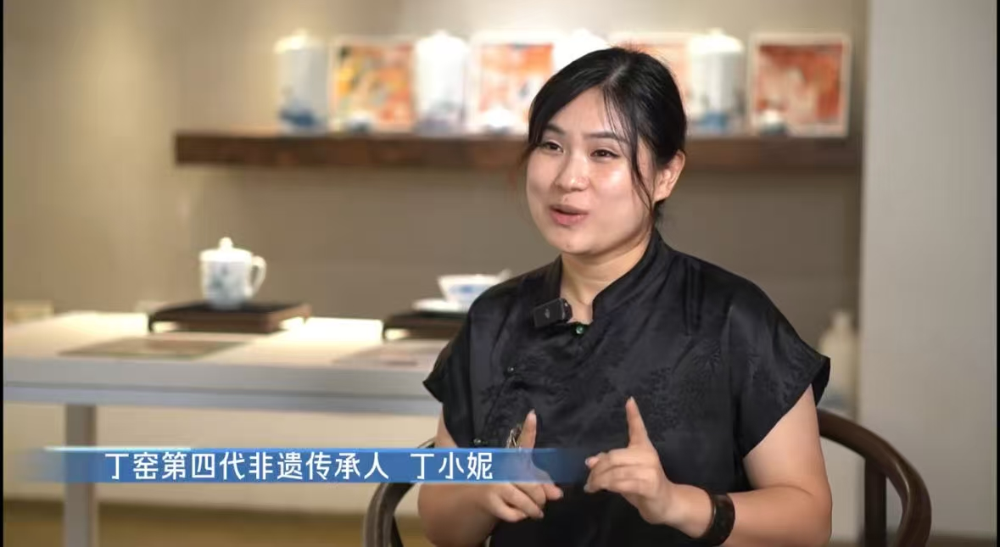

新闻动态 更多
-
2025-10-01湖南非遗传承人活动启动，促进传统文化保护
-
2025-09-22花鼓戏进校园，青少年感受传统戏曲魅力
-
2025-09-10湘绣国际展览筹备中，展示湖南非遗风采
-
2025-08-28土家织锦技艺传承班开班，培养新一代传承人
-
2025-07-15非遗数字化成果发布，推动文化创新传承
论坛 更多
-
论坛帖子：如何保护非遗技艺，让传统文化在现代社会中焕发新生2025-10-10
-
论坛帖子：非遗与乡村振兴，探索传统文化助力农村发展新路径2025-09-05
-
论坛帖子：数字化资源共享，构建非遗保护新生态2025-08-21
专题报道 更多
-
2025-10-12湖南花鼓戏专题报道：传统艺术的现代传承
-
2025-09-30湘绣传承人专访：针线间的匠心精神
-
2025-08-20吊脚楼文化保护：传统建筑与现代生活的融合

非物质文化遗产地图
湖南省代表性项目、湖南省代表性传承人
120
民间文学
98
传统音乐
76
传统舞蹈
54
传统戏剧
45
传统曲艺
28
传统体育、游艺与杂技
63
传统美术
134
传统技艺
31
传统医药

周承云
龙船崽崽 · 国家级传承人
代表性传承人
周承云
龙船崽崽

丁小妮
釉下五彩瓷

栗田梅
侗锦

沈燕希
花瑶挑花

麻茂庭
苗族银饰

何艳新
女书

尹冬香
滩头年画

刘爱云
湘绣

刘新建
印染

曹正新
油纸伞
一
周承云
龙船崽崽
二
丁小妮
釉下五彩瓷
三
栗田梅
侗锦
四
沈燕希
花瑶挑花
五
麻茂庭
苗族银饰
六
何艳新
女书
七
尹冬香
滩头年画
八
刘爱云
湘绣
九
刘新建
印染
十
曹正新
油纸伞